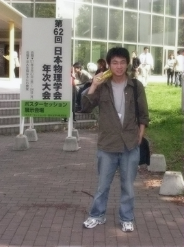

叶 茂

| 研究テーマ | STM及び光電子分光による機能性材料の電子構造の研究 1）STMを用いたグラフェンナノフィルムにおけるエッジ状態の実空間観測 2）X線放射光光電子分光を用いた強磁性形状記憶効果の起源の解明 |
|---|---|
| 出身 | 中国 |
| 修士論文題目 | Electronic structure of functional materials: Heusler-type alloys and graphene nano-film |
| 原著論文 |
3. M. Ye, A. Kimura, Y. Miura, M. Shirai, Y. T. Cui, K. Shimada, H. Namatame, M.Taniguchi, S. Ueda, K. Kobayashi, R. Kainuma, T. Shishido, K. Fukushima, and T. Kanomata "Role of Electronic Structure in the Martensitic Phase Transition of Ni2Mn1+xSn1-x Studied by Hard-X-Ray Photoelectron Spectroscopy and Ab Initio Calculation" Phys. Rev. Lett. 104, 176401 (2010) 2. M. Ye, Y.T. Cui, Y. Nishimura, Y. Yamada, S. Qiao, A. Kimura, M. Nakatake, H. Namatame, and M. Taniguchi "Edge states of epitaxially grown graphene on 4H-SiC(0001) studied by scanning tunneling microscopy" Euro. Phys. J. B (2010) 1. M. Ye, Y. T. Cui, S. Qiao, A. Kimura, M. Sawada, H. Namatame and M. Taniguchi "Graphene Epitaxially Grown on Vicinal 4H-SiC(0001) Substrates" e-J. Surf. Sci. Nanotech. 7, 29 (2009) |
| 国際学会 | 4. 学会名：11th International Conference on Electronic Spectroscopy and Structure (ICESS11) 題目：Edge states of epitaxially grown graphene on 4H-SiC(0001) studied by scanning tunneling spectroscopy ポスター発表 場所：Nara, Japan (2009.10) 3. 学会名：European Conference On Surface Science 26 (ECOSS 26) 題目：Substrate effect on the morphology and electronic structure of the epitaxially grown graphene 場所：Parma, Italy (2009.8) Poster session 2. 学会名：International Symposium on Surface Science and Nanotechnology (ISSS-5) 題目：Graphene epitaxially grown on the step with unit-cell height of 4H-SiC(0001) substrate 場所：Waseda Univeisty, Japan (2008.11) Oral session 1. 学会名：The 4th Vacuume and Surface Sciences Conference of Asia and Australia (VASSCAA-4) 題目： 場所：Matsue, Japan (2008.10) Oral session |
| 国内学会 | 9. 学会名：文部科学省科学研究費補助金 特定領域研究 「スピン流の創出と制御」平成22年度研究会 題目：強磁性形状記憶合金 Ni2Mn1+xSn1-x の電子構造 場所：京都大学 おうばくプラザ (2010.6.24) ポスター発表 8. 学会名：日本物理学会 第65回年次大会 題目：Substrate effect on the edge states of epitaxial graphenen grown on 4H-SiC(0001) studied by STM/STS 場所：岡山大学 津島キャンパス (2009.10) 口頭発表 7. 学会名：東京大学物性研究所短期研究会 -ディラック電子系の物性- 題目：Edge states of epitaxially grown graphene on 4H-SiC(0001) studied by scanning tunneling spectroscopy 場所：東京大学 (2009.10) 口頭発表 6. 学会名：日本物理学会 2009年秋季大会 題目：The electronic structures correlated with the martensitic transition in Ni2Mn1+xSn1-x 場所：熊本大学 (2009.9) 口頭発表 5. 学会名：日本物理学会 2009年年次大会 題目：The electronic structures correlated with the martensitic transition in Ni2Mn1+xSn1-x 場所：立教大学 (2009.3) 口頭発表 4. 学会名：日本物理学会 2008年秋季大会 題目：Electronic structures of Ni2-xCoxMnGa studied by X-ray photoemission spectroscopy 場所：岩手大学 (2008.9) 口頭発表 3. 学会名：日本物理学会 2008年秋季大会 題目：Synthesis and charaterization of graphene epitaxially grown on vicinal surface of SiC(0001) with scanning tunneling microscopy 場所：岩手大学 (2008.9) ポスター発表 2. 学会名：日本物理学会 第63回年次大会 題目：Electronic structures of half-heusler alloys XPtSn (X=Ti, Zr, Hf) studied by X-ray photoemission spectroscopy 場所：近畿大学(大阪府) (2008.3) ポスター発表 1. 学会名：日本物理学会 第62回年次大会 題目：Photoemission spectroscopy of XPtSn (X=Ti, Zr, Hf, Mn) 場所：北海道大学 (2007.9) ポスター発表 |
| 個人ページ | http://home.hiroshima-u.ac.jp/d080867 |